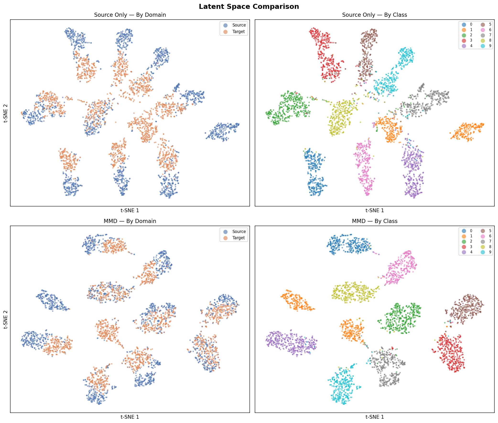
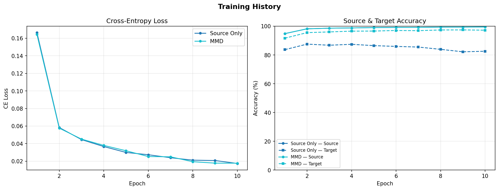
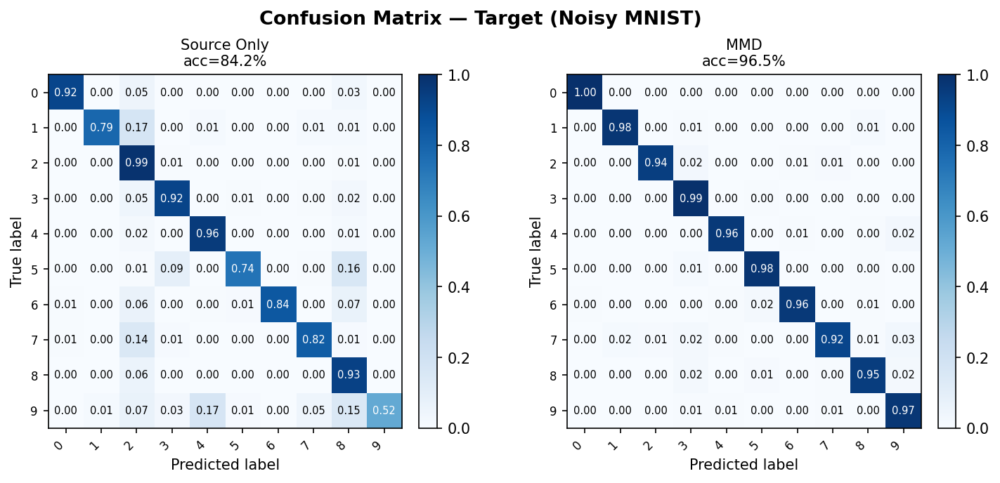
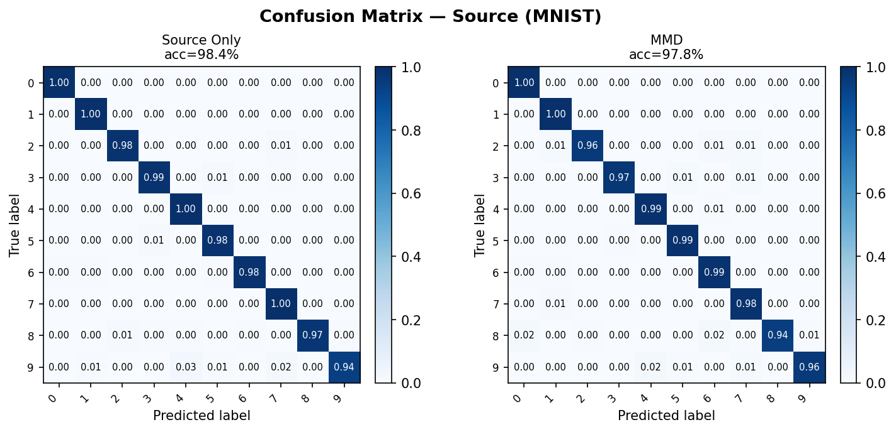
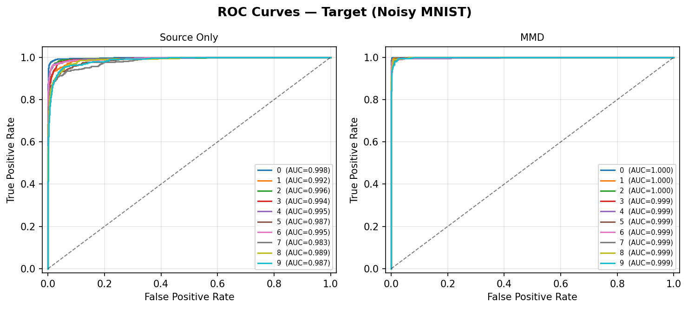
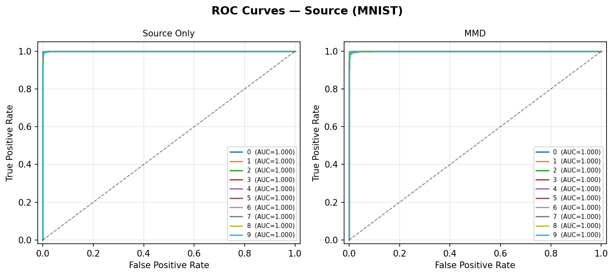

Diagnostics¶
shiftkit.diagnostics provides visualisation tools for inspecting latent spaces, classification performance, and training dynamics.
plot_latent_space¶
Encode samples from source and target loaders, project to 2-D, and plot two panels:
- Left — coloured by domain (source = blue, target = orange)
- Right — coloured by class label (10 colours)
Three projection methods are available via the projection parameter:
t-SNE, Isomap, and UMAP.
from shiftkit.diagnostics import plot_latent_space
# t-SNE (default)
fig = plot_latent_space(
model=model,
source_loader=test_src,
target_loader=test_tgt,
max_samples=2000,
projection="tsne",
title="CNN + MMD",
save_path="outputs/latent_space.png",
show=False,
)
# Isomap
fig = plot_latent_space(model, test_src, test_tgt,
projection="isomap", n_neighbors=10)
# UMAP
fig = plot_latent_space(model, test_src, test_tgt,
projection="umap", n_neighbors=15, min_dist=0.1)
Parameters¶
| Parameter | Type | Default | Description |
|---|---|---|---|
model |
nn.Module |
— | Trained model with .encode() method |
source_loader |
DataLoader |
— | Source domain DataLoader |
target_loader |
DataLoader |
— | Target domain DataLoader |
max_samples |
int |
2000 |
Max samples per domain |
projection |
str |
"tsne" |
Projection method: "tsne", "isomap", or "umap" |
perplexity |
float |
30.0 |
t-SNE perplexity (t-SNE only) |
n_iter |
int |
1000 |
t-SNE number of iterations (t-SNE only) |
n_neighbors |
int |
15 |
Neighbourhood size (Isomap and UMAP) |
min_dist |
float |
0.1 |
Minimum distance between embedded points (UMAP only) |
title |
str |
"Latent Space" |
Figure suptitle |
save_path |
str \| None |
None |
If set, save figure to this path |
class_names |
list \| None |
None |
Class label strings; uses integers if None |
show |
bool |
True |
Whether to call plt.show() |
Returns: matplotlib.figure.Figure
Interpreting the domain panel
A well-adapted model will show blue and orange points interleaved in the domain panel — the encoder has learned to ignore domain-specific variation. A non-adapted model will show two clearly separated clusters.
compare_latent_spaces¶
Compare latent spaces of multiple models in a single figure. Each model gets one row with the same two panels (by domain, by class). Rows appear in dict insertion order.
from shiftkit.diagnostics import compare_latent_spaces
fig = compare_latent_spaces(
models={
"Source Only": model_baseline,
"MMD": model_mmd,
"DANN": model_dann,
},
source_loader=test_src,
target_loader=test_tgt,
max_samples=2000,
projection="tsne", # or "isomap" / "umap"
save_path="outputs/latent_space_comparison.png",
show=False,
)
Output:

Top row: Source-Only baseline. Bottom row: MMD-adapted model. Left column: by domain, right column: by class label.Parameters¶
| Parameter | Type | Default | Description |
|---|---|---|---|
models |
dict[str, nn.Module] |
— | {label: model} mapping — one row per entry |
source_loader |
DataLoader |
— | Source domain DataLoader |
target_loader |
DataLoader |
— | Target domain DataLoader |
max_samples |
int |
2000 |
Max samples per domain per model |
projection |
str |
"tsne" |
Projection method: "tsne", "isomap", or "umap" |
perplexity |
float |
30.0 |
t-SNE perplexity (t-SNE only) |
n_iter |
int |
1000 |
t-SNE iterations (t-SNE only) |
n_neighbors |
int |
15 |
Neighbourhood size (Isomap and UMAP) |
min_dist |
float |
0.1 |
Minimum distance between points (UMAP only) |
save_path |
str \| None |
None |
If set, save figure to this path |
class_names |
list \| None |
None |
Class label strings; uses integers if None |
show |
bool |
True |
Whether to call plt.show() |
Returns: matplotlib.figure.Figure
Projection methods¶
t-SNE¶
t-Distributed Stochastic Neighbour Embedding converts high-dimensional similarities into a probability distribution and minimises the KL divergence between this distribution and one over the 2-D embedding. It excels at revealing tight clusters but does not preserve global structure, and distances between clusters are not directly interpretable.
Key hyperparameter: perplexity (5–50). Higher values consider larger
neighbourhoods and produce coarser cluster structure.
Reference: van der Maaten, L., & Hinton, G. (2008). Visualizing Data using t-SNE. Journal of Machine Learning Research, 9, 2579–2605. [PDF]
Isomap¶
Isometric Mapping extends classical MDS by replacing Euclidean distances with shortest-path (geodesic) distances on the data manifold, estimated from a k-nearest-neighbour graph. Unlike t-SNE, Isomap is deterministic and better preserves global geometry, making relative distances between clusters more meaningful.
Key hyperparameter: n_neighbors — the neighbourhood size for the graph. Smaller values
capture fine local structure; larger values smooth the manifold estimate.
Reference: Tenenbaum, J. B., de Silva, V., & Langford, J. C. (2000). A Global Geometric Framework for Nonlinear Dimensionality Reduction. Science, 290(5500), 2319–2323. [PDF]
UMAP¶
Uniform Manifold Approximation and Projection constructs a fuzzy topological representation of the data and optimises a low-dimensional embedding to have a similar topological structure. It is significantly faster than t-SNE on large datasets and better preserves both local and global structure.
Key hyperparameters:
n_neighbors— controls the balance between local and global structure. Smaller values focus on local neighbourhood; larger values give a more global view.min_dist— minimum distance between embedded points. Smaller values pack clusters more tightly; larger values spread them out.
Reference: McInnes, L., Healy, J., & Melville, J. (2018). UMAP: Uniform Manifold Approximation and Projection for Dimension Reduction. arXiv:1802.03426. [PDF]
plot_training_history¶
Plot CE loss and accuracy curves from one or more training histories on the same axes.
- Left panel — cross-entropy loss per model
- Right panel — source accuracy (solid) and target accuracy (dashed) per model
from shiftkit.diagnostics import plot_training_history
# Single history (backward-compatible)
plot_training_history(history_mmd)
# Multi-model comparison
fig = plot_training_history(
histories={
"Source Only": history_baseline,
"MMD": history_mmd,
"DANN": history_dann,
},
save_path="outputs/training_history.png",
show=False,
)
Output:

Left: CE loss for both models. Right: source accuracy (solid) and target accuracy (dashed). The gap between solid and dashed lines shows the domain shift.Parameters¶
| Parameter | Type | Default | Description |
|---|---|---|---|
histories |
list \| dict[str, list] |
— | Single history list, or {label: history} dict for multi-model overlay |
save_path |
str \| None |
None |
If set, save figure to this path |
show |
bool |
True |
Whether to call plt.show() |
Returns: matplotlib.figure.Figure
History dict format¶
Each history is a list[dict] returned by trainer.fit(). Required keys:
| Key | Type | Description |
|---|---|---|
epoch |
int |
Epoch number |
ce_loss |
float |
Cross-entropy loss |
mmd_loss |
float |
MMD² loss (0.0 for SourceOnlyTrainer) |
total_loss |
float |
Total loss |
src_acc |
float |
Source accuracy in [0, 1] |
tgt_acc |
float |
Target accuracy in [0, 1] |
plot_confusion_matrix¶
Compute and display a normalised confusion matrix (row = true class, column = predicted class) for one or more models on a single DataLoader. Each cell shows the proportion of true-class samples predicted as each class — perfect classification gives an identity matrix.
Accepts a single model or a {label: model} dict to compare multiple models side-by-side in one figure.
from shiftkit.diagnostics import plot_confusion_matrix
# Single model on target test set
fig = plot_confusion_matrix(
models=model_mmd,
loader=test_tgt,
domain="target-test",
save_path="outputs/confusion_matrix.png",
show=False,
)
# Compare multiple models side-by-side
fig = plot_confusion_matrix(
models={
"Source Only": model_baseline,
"MMD": model_mmd,
"LMMD": model_lmmd,
},
loader=test_tgt,
class_names=[str(i) for i in range(10)],
domain="target-test",
save_path="outputs/confusion_matrix_comparison.png",
show=False,
)
Parameters¶
| Parameter | Type | Default | Description |
|---|---|---|---|
models |
nn.Module \| dict[str, nn.Module] |
— | Single model or {label: model} dict |
loader |
DataLoader |
— | Labelled DataLoader to evaluate on |
class_names |
list[str] \| None |
None |
Class label strings; uses integers if None |
max_samples |
int |
5000 |
Maximum number of samples to evaluate |
normalize |
bool |
True |
Row-normalise to proportions; if False show raw counts |
domain |
str |
"target" |
Label shown in the figure title |
save_path |
str \| None |
None |
If set, save figure to this path |
show |
bool |
True |
Whether to call plt.show() |
Returns: matplotlib.figure.Figure
Target domain output (Source-Only vs MMD):

Row-normalised confusion matrices on the Noisy MNIST target test set. Source-Only (left) shows visible off-diagonal errors due to domain shift; MMD (right) recovers a near-diagonal structure.Source domain output (reference):

Same models evaluated on the clean MNIST source test set — both models perform similarly here, confirming the performance gap is domain-induced.Interpreting the confusion matrix
- Diagonal cells (top-left to bottom-right) show correct predictions for each class.
- Off-diagonal cells reveal which classes are confused with each other.
- After DA, a well-adapted model should show a near-diagonal matrix on the target domain that closely matches its source-domain matrix.
plot_roc_curve¶
Plot per-class ROC curves with AUC scores using a one-vs-rest (OvR) strategy.
- For binary tasks: a single ROC curve is drawn.
- For multi-class tasks: one curve per class, all on the same axes per model.
Accepts a single model or a {label: model} dict to compare models side-by-side.
from shiftkit.diagnostics import plot_roc_curve
# Single model
fig = plot_roc_curve(
models=model_mmd,
loader=test_tgt,
domain="target-test",
save_path="outputs/roc_curves.png",
show=False,
)
# Compare multiple models
fig = plot_roc_curve(
models={
"Source Only": model_baseline,
"MMD": model_mmd,
"LMMD": model_lmmd,
},
loader=test_tgt,
class_names=[str(i) for i in range(10)],
domain="target-test",
save_path="outputs/roc_comparison.png",
show=False,
)
Parameters¶
| Parameter | Type | Default | Description |
|---|---|---|---|
models |
nn.Module \| dict[str, nn.Module] |
— | Single model or {label: model} dict |
loader |
DataLoader |
— | Labelled DataLoader to evaluate on |
class_names |
list[str] \| None |
None |
Class label strings; uses integers if None |
max_samples |
int |
5000 |
Maximum number of samples to evaluate |
domain |
str |
"target" |
Label shown in the figure title |
save_path |
str \| None |
None |
If set, save figure to this path |
show |
bool |
True |
Whether to call plt.show() |
Returns: matplotlib.figure.Figure
How ROC and AUC work¶
The ROC curve plots the True Positive Rate (recall) against the False Positive Rate as the classification threshold varies. For multi-class problems each class c is treated as the positive class and all others as negative (one-vs-rest).
The Area Under the Curve (AUC) summarises the entire ROC curve as a single number:
- AUC = 1.0 — perfect classifier
- AUC = 0.5 — random chance (diagonal dashed line)
- AUC < 0.5 — worse than random (predictions are systematically inverted)
Target domain output (Source-Only vs MMD):

Per-class ROC curves on the Noisy MNIST target test set. Source-Only (left) shows lower AUC for several classes due to domain shift; MMD (right) restores near-perfect AUC across all 10 digits.Source domain output (reference):

Same models on the clean MNIST source test set — both models show high AUC on source, confirming the drop on target is domain-induced rather than a training failure.AUC as a DA quality metric
Compare AUC on the target test set across methods. An improvement over the Source-Only baseline directly quantifies the benefit of domain adaptation for each class, independent of the classification threshold.
Comparing methods¶
Pass a {label: history} dict to overlay multiple runs on the same plot: